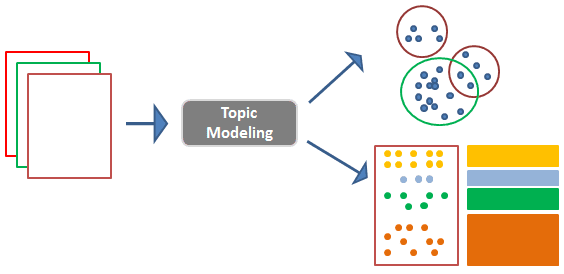
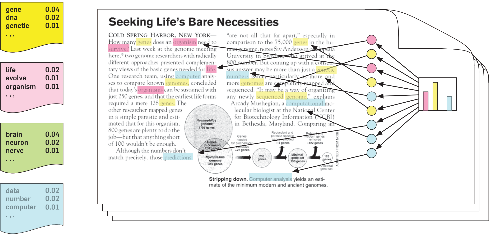

Topic Models
F20DV/F21DV Data Visualization and Analytics
2021-2022
## Overview * What is Topic Modelling? * Topic Model Methods * Visualization Topic Model Data * Examples & Discussion <aside class='notes'> </aside>
## What is Topic Modelling? In machine learning and natural language processing, a topic model is a type of statistical model for discovering the abstract "topics" that occur in a collection of documents. <aside class='notes'> </aside>
### Visual Overview **Topic Modelling** Raw data (text) is used to generate topic groups <br>  <aside class='notes'> </aside>
### Text to Topics Algorithm analyses text and creates 'topic' groups <br>  <aside class='notes'> </aside>
### Uncomplicated Approach (Word Occurrences) * Basic example may include a word count algorithm (tracks occurrence of words or similar words) * Limited and can only show basic information (i.e., does not show accurate representation of the topic discussed in the text) <aside class='notes'> </aside>
### Uncomplicated Approach (Word Occurrences) * Count the number of occurrences of each word * Keep track of these in a dictionary/array ``` // List of words/no occurrences var myWords = [{word: "Running", size: "10"}, {word: "Surfing", size: "20"}, {word: "Climbing", size: "50"}, {word: "Kiting", size: "30"}, {word: "Sailing", size: "20"}, {word: "Snowboarding", size: "60"} ]; ``` <aside class='notes'> </aside>
Word Cloud
### Word Clouds * The advantage of **word clouds** is that they are **attractive and easy to create** * The disadvantage is that they typically fail to give you the **actionable insights** you need to improve and display depth <aside class='notes'> </aside>
### LDA (**L**atent **D**irichlet **A**llocation) * LDA is a popular topic modelling algorithm * Note there are a range of algorithms on the subject but we **focus on LDA** * Further reading, see other algorithms, such as: * Explicit semantic analysis * Latent semantic analysis * Hierarchical Dirichlet process * Non-negative matrix factorization * Statistical classification * Unsupervised learning, ... <aside class='notes'> </aside>
### LDA (Latent Dirichlet allocation) * The advantages of LDA is a probabilistic model with **interpretable topics** * LDA takes a **corpus of text as input**, assume that text is a mixture of a small number of topics, and that **each word is attributable to one of the topics** * Details on the LDA equations/mathematics * see http://en.wikipedia.org/wiki/LatentDirichletallocation <aside class='notes'> </aside>
### Let's take a look at a some examples ... * Raw Twitter data (random posts) * Books/articles * Papers reports (e.g., REF2014 data) <aside class='notes'> </aside>
## LDA (Careful) * **Disadvantages** are that it is hard to know when LDA is working * Topics are soft-clusters so there is no objective metric to say *this is the best choice* of hyperparameters * Metrics like perplexity (how well the model explains the data) are okay to test if the learning is working, but very poor indicators of the overall quality of the model * For example, you could have a model with very low perplexity, but whose topics are not very informative <aside class='notes'> </aside>
## Summary * Data is not always in the form that you want * Extracting data/information from the *raw* data * Data analytics (models/equations to extract information) <aside class='notes'> </aside>
## To do this week ... * Read over the lectures * **Review** the revision questions * Work through tutorial practicals * Experiment (get into good habits) <aside class='notes'> </aside>
## Sources/data/examples * Twitter Data * https://wellecks.wordpress.com/tag/topic-modeling/ * JS Text LDA * https://awaisathar.github.io/lda.js/ <aside class='notes'> </aside>